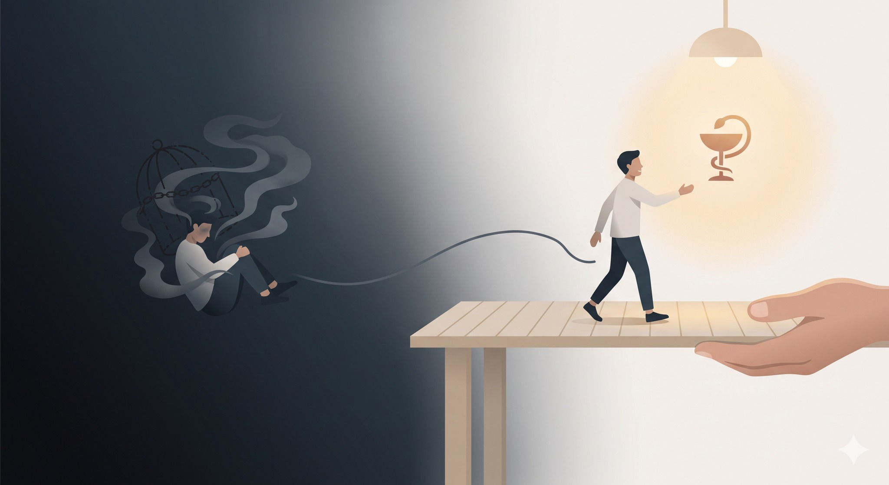

一句「你卡到了」，把受苦的患者推入多深的深淵？
【 一句「你卡到了」，把受苦的患者推入多深的深淵？ 】
人在飽受病痛折磨時，總會迫切地希望能立刻抓住一根救命稻草。
當多方嘗試卻未達預期，或是病程漫長難熬時，「病急亂投醫」就成了人之常情。在這種極度脆弱的時刻，投的到底是不是「正規醫療」，似乎變得不再重要；只要有人宣稱能解決當下的痛苦，什麼方法都願意去試。
而這種身心俱疲的脆弱，往往也給了許多非醫療專業的有心人士有了介入的空間。
在臨床上，我們常會聽到患者尋求各種未經正規訓練的坊間處置。近年來，更常見到一些以「老師」自居、宣稱具備「特殊體質」的人士。他們聲稱能感應到患者身上的濁氣、邪氣，甚至是冤親債主的意念，打著「我只是在幫助人」的大旗，透過各種言語或儀式來指導這些猶如熱鍋上螞蟻的受苦者。
超乎肉身以外的力量存在嗎？
對於未知的領域，我始終保持敬畏，不輕易否定。但我一直堅信一個核心原則：「醫療的問題，就必須回到醫療的規範裡解決。」
這幾天，診間來了一位大姐。多年前，她因中樞神經系統的問題經歷了手術。雖然術後有改善，但左半身依然僵硬、活動受限，目前仍在漫長且緩慢的復健與進步中。
在這段難熬的期間，周遭友人出於「善意」，請了一位有特殊體質的人幫她感應，並告訴她：左半身的僵硬是因為「卡到了」。
就單單這麼一句話，瞬間成了銬住她心智的無形枷鎖。
從此，每當身體不舒服時，大姐的念頭就會往那個方向聯想。恐懼與未知讓她越來越焦慮不安，嚴重影響了睡眠與情緒，整個人變得萎靡且憂鬱。病況也急轉直下，疼痛程度與頻率越來越高。
萬幸的是，大姐內心深處的直覺最終拉了她一把，在覺得狀態越來越不對勁時，她決定回歸正規醫療，先回到了原執刀醫師的門診追蹤，隨後也有了機緣來到我的診間。
聽著她的經歷，我心中五味雜陳。
身為醫師，深知在診間裡做的每一個動作、說出的每一句話，都有可能對眼前的患者產生無比巨大的影響。因此，哪怕只是患者隨口一問，醫療人員的回應都必須經過大腦慎重思考後才敢說出口，深怕一個不精確的詞彙，就徒增了患者的恐慌。
相比之下，無醫療執照、非正規體系的人士常常單憑微小的個人經驗或偏方，就用一種「單向、絕對」甚至強硬的姿態給出指引。對於無助的患者而言，這種「以身試法」，不僅可能錯失醫療處置的黃金救援時間，有時簡單一句「你卡到」，更是瞬間將人推入萬劫不復的心理深淵。
令人無奈的是，這些包裹著神祕色彩的非正規處置，到最後往往會變成「中醫」在背鍋。這類人士常宣稱自己自學過中醫、略懂經絡穴道與陰陽五行，便理所當然地化身為中醫的「代言人」，藉由這種怪力亂神的方式來「助人」並從中獲利。
但在中醫傳承千年的經典典籍裡，從來沒有教導我們用「感應」、「測氣」或探究「冤親債主」來替人治病；更不會推銷能量水、正氣靈石或驅魔符咒。
我所認知的『中醫』是什麼？
無論是遵循古法的老中醫，還是結合現代醫學視野的新一代中醫師，我們的核心始終如一：老老實實地看病，嚴謹地望聞問切、多診合參；用大家聽得懂的「人話」溝通，最後運用針、藥與雙手，腳踏實地去解除身體的結構受限與功能失衡。
在經過好一陣子的聊天與開導後，這位大姐終於放下心中的大石頭，確信了自己當初求醫的直覺。她決心回歸正規醫療的軌道，透過西醫的術後追蹤與中醫的結構調養，一步步把失衡的身心，安穩地扎根下來。
解鈴還須繫鈴人，而正規醫療，永遠是那雙最穩當、最講求實證的解鈴手。
#醫療本質 #全人診療 #內外互參 #破除迷思 #回歸醫療專業
太初中醫診所 東門中醫
中醫師 黃彥鈞
【 ⚠️ 醫療免責聲明與就醫提醒 】
本文分享之臨床案例已進行嚴格的去識別化與隱私保護處理。任何牽涉中樞神經系統、手術後遺症或長期不明疼痛之病症，皆可能涉及複雜之神經與結構損傷。若有相關症狀，請務必尋求具備合格執照之正規醫療院所，進行完整之理學、影像與神經學鑑別診斷，切勿聽信偏方或非醫療專業之民俗說法以免延誤病情。醫療處置成效因個人體質而異，請與您的主治醫師進行充分討論。
